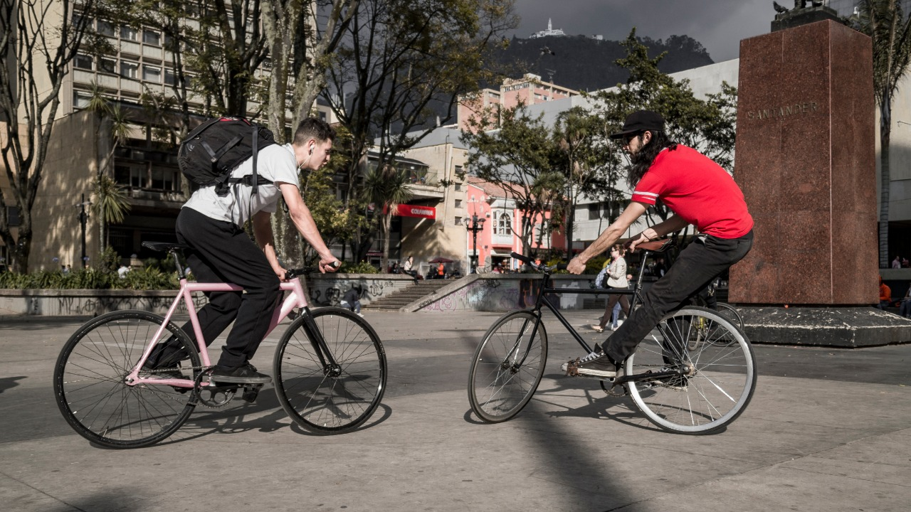
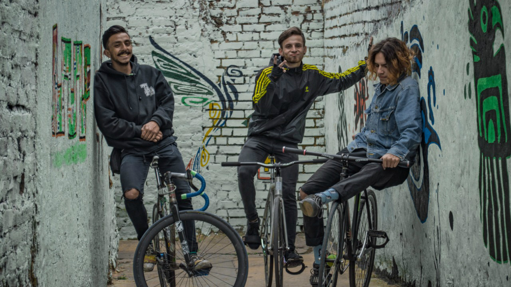
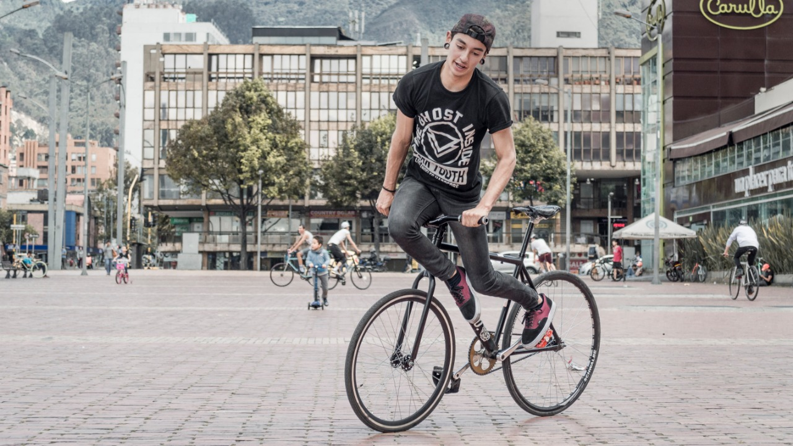
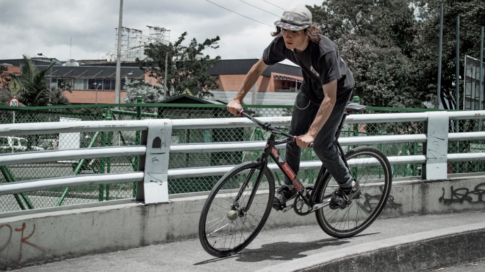
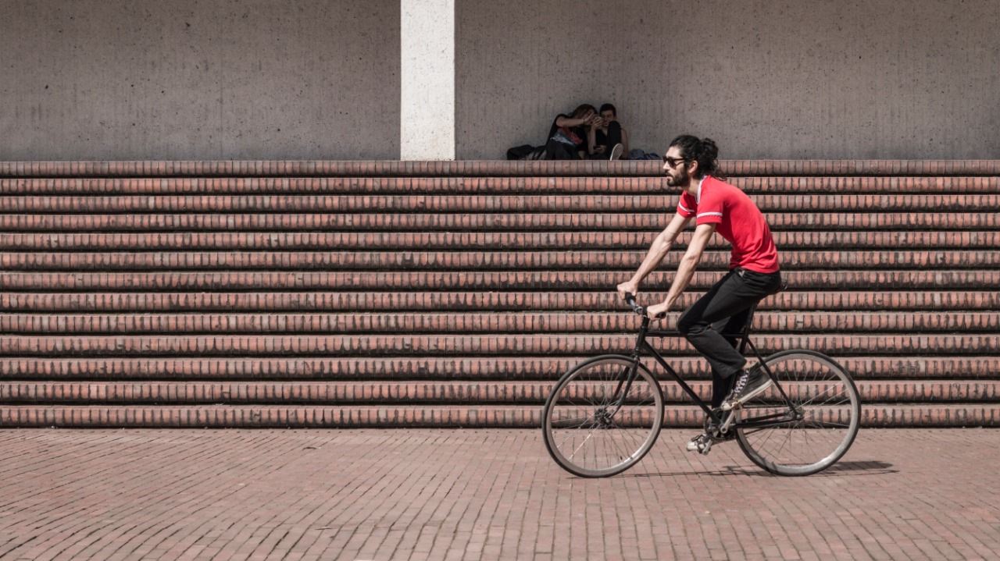
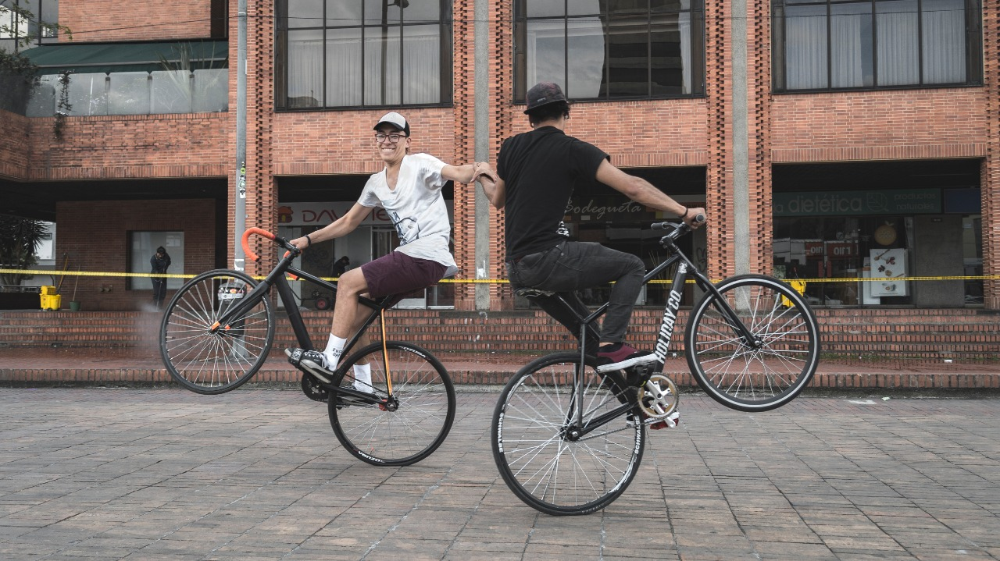
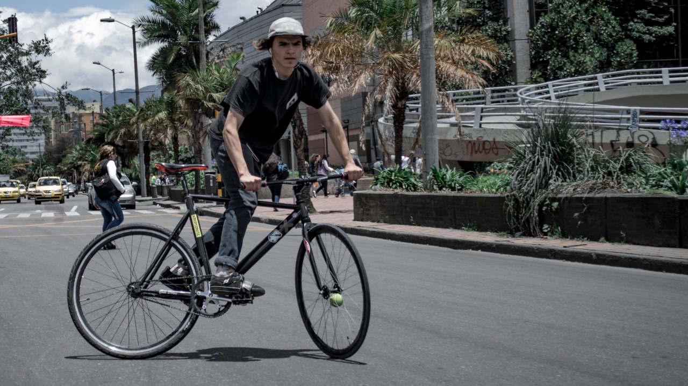
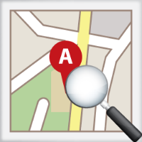
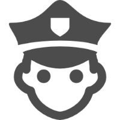

Servicio de Informacion y consulta local a ciclistas








PLANEA TU VIAJE
Planea tu recorrido usando rutas rápidas y seguras, conoce las diferentes zonas de riesgo en tu localidad, informa de cualquier evento o falla en la infraestructura pública que pueda afectar tu seguridad y la de los demás.

SEGURIDAD
En la actualidad la seguridad es un tema importante en nuestro diario vivir, por lo tanto se hace uso de tecnologías para aportar en la solución a la problemática de inseguridad que enfrentan algunos de los ciudadanos que usan la bicicleta como medio de transporte.
INFORMACIÓN Y ALERTAS
Recibe información en tiempo real acerca de eventos que sucedan dentro de tu localidad, además de enviar y responder a solicitudes expresadas por otros usuarios.